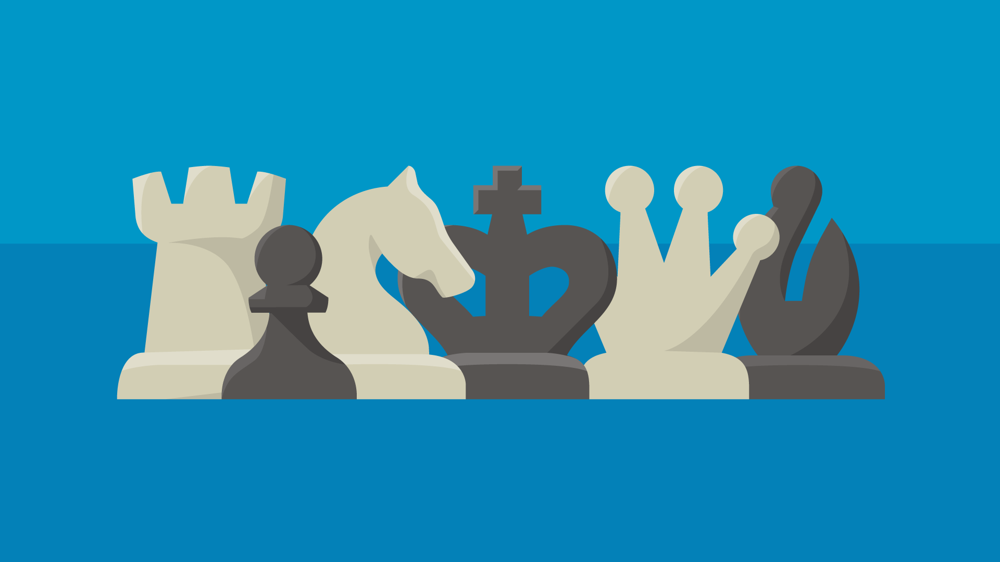

♛ What is AI Chess? ♘
AI Chess is Artificial intelligence which ha not only learned chess but many other games. Ai chess has come a long way and is now at the top of the chess leaderboaerd and many other games. The way they work is by analyzing the internet and watching how players play and coming up with the best response. In the early years of AI chess it was horrible at chess even a beginner could beat the the machine, But this changed the day Deepblue faced a grand master...

A Brief History of Chess
The earliest form of the game that’s now called chess can be dated back to India in the sixth century.
Like the modern game, this predecessor, called chaturanga (or catur) was played on an 8x8 grid and featured pieces generally similar to those of modern chess.
Though the exact rules of chaturanga are unknown, it looks remarkably similar to modern chess, with a few key differences. Firstly, the rules for moving queens (then called counselors) and bishops (then called elephants) were generally more limited.
The objective of the game may have also been somewhat different: some accounts of chaturanga say that a player could win by removing all his or her enemy’s pieces besides the king.
The rules of chaturanga spread to Persia, where it was known as chatrang, by the tenth or eleventh century, and it’s here that the earliest recorded games of chess are found.
From Persia, the game passed into the Arab world. It also spread to China, Japan, and Southeast Asia, where it evolved into the related games xiangqi and shogi, which are sometimes called Chinese and Japanese chess, respectively. This period saw the first scholarly studies of chess, analyzing chess problems, openings, and other topics still considered today.
The Benefits of chess

1. Chess Brings People Together
Chess is one of the oldest games in the world dating back over 1500 years. The game of chess has evolved as it spread around the globe to the game we play today. As a result, this journey has brought people together from different cultures, ages, and backgrounds over a common bond and passion for the game.
Chess brings all ages together!
2. Chess Teaches You How To Win And Lose
Of course, everyone likes to win, but it is just important to learn how to accept losing. As the saying goes—sometimes you give the lesson, and sometimes you receive the lesson! Most importantly, try to learn from those losses and come back as a better player. Just as in life, we need to get back up when confronted with failure and come back stronger and wiser. Winning with grace is an important character trait that chess can teach a person.
3. Chess Helps Children Realize The Consequence Of Their Actions
The scholastic chess boom around the world has been on a steady rise over the last decade. More important than these children becoming great chess players or getting high ratings is that chess teaches children from an early age that their choices have consequences—both good and bad. Thinking your moves through and trying to play the best move that you can is rewarding while playing too quickly and rushing your decisions can have negative repercussions.
Chess can help children develop important character traits.
4. Chess Helps You Focus
As Bobby Fischer said, "Chess demands total concentration." A chess player can make moves like a grandmaster for 30 moves and then get distracted on move 31 and make an elementary blunder that loses the game! This intense focus is useful in everyday life when confronted with school assignments, daily tasks, and deadlines.
Chess can help a person develop discipline and focus.
5. Chess Is A Great Educational Tool For Schools
Before, during, and after-school programs are extremely popular, and for good reason. Chess is a low-cost activity for children to become involved with right at their own school. Children of different ages, backgrounds, and special needs can all take part in a chess class or club.
School chess programs create great opportunities for students socially, emotionally, and academically.
Thanks to "chess.com" for the images and text.